특수용접기능사 (2010-07-11 기출문제)
1과목: 용접일반
1. 피복 아크 용접봉에서 피복제의 주된 역할이 아닌 것은?
- 전기 절연작용을 한다.
- 아크를 안정시킨다.
- 용착금속에 필요한 합금 원소를 첨가한다.
- 잔류 응력을 제거한다.
(정답률: 65%)

2. 고압에서 사용이 가능하고 수중절단 중에 기포의 발생이 적어 가장 많이 사용되는 예열가스는?
- 벤젠
- 수소
- 아세틸렌
- 프로판
(정답률: 89%)
3. 연강봉 피복 금속 아크 용접봉에서 피복제 중에 TiO2를 약 용접에 많이 사용되는 것은?
- 저수소계
- 알루미나이트계
- 고산화티탄계
- 고셀룰로오스계
(정답률: 61%)
4. 아크에어 가우징(arc air gouging) 작업시 압축공기의 압력은 어느 정도가 옳은가?
- 3~4kgf/㎠
- 5~7kgf/㎠
- 8~10kgf/㎠
- 11~13kgf/㎠
(정답률: 72%)
5. KS에 규정된 연강용 가스 용접봉의 지름치수(단위 : ㎜)에 해당되지 않는 것은?
- 1.6
- 4.2
- 3.2
- 5.0
(정답률: 45%)
6. 용접 중 전류를 측정할 때 전류계의 측정위치로 적합한 것은?
- 1차측 접지선
- 1차측 케이블
- 2차측 접지선
- 2차측 케이블
(정답률: 69%)
7. 산소-아세틸렌가스 절단과 비교한 산소-프로판 가스 절단의 특징이 아닌 것은?
- 절단면 윗 모서리가 잘 녹지 않는다.
- 슬래그 제거가 쉽다.
- 포갬 절단 시에는 아세틸렌보다 절단속도가 느리다.
- 후판 절단 시에는 아세틸렌보다 절단속도가 빠르다.
(정답률: 59%)
8. 가스 용접 기법의 설명 중 맞는 것은?
- 열 이용율은 전진법보다 후진법이 우수하다.
- 용접변형은 후진법이 크다.
- 산화의 정도가 심한 것은 후진법이다.
- 용접속도는 전진법에 비해 후진법이 느리다.
(정답률: 75%)
9. AW-300 무부하 전압 80V, 아크전압 30V인 교류 용접기를 사용할 때 역률과 효율은 약 얼마인가? 단, 내부손실은 4kw이다.
- 역률 : 54%, 효율 : 69%
- 역률 : 89%, 효율 : 72%
- 역률 : 80%, 효율 : 72%
- 역률 : 54%, 효율 : 80%
(정답률: 64%)
10. 가스 용접에 사용되는 기체의 폭발한계가 가장 큰 것은?
- 수소
- 메탄
- 프로판
- 아세틸렌
(정답률: 50%)
11. 직류 아크 용접기의 종류별 특징 중 올바르게 설명된 것은?
- 전동 발전형 용접기는 완전한 직류를 얻을 수 없다.
- 전동 발전형 용접기는 구동부와 발전기부로 되어 있고 보수와 점검이 어렵다.
- 정류기형 용접기는 보수와 점검이 어렵다.
- 정류기형 용접기는 교류를 정류하므로 완전한 직류를 얻을 수 있다.
(정답률: 40%)
12. 산소는 대기 중의 공기 속에 약 몇 % 함유되어 있는가?
- 11
- 21
- 31
- 41
(정답률: 69%)
13. 내용적 40리터, 충전압력이 150kgf/㎠ 인 산소용기의 압력이 100kgf/㎠ 까지 내려갔다면 소비한 산소의 량은 몇 ℓ인가?
- 2000
- 3000
- 4000
- 5000
(정답률: 54%)
14. 용접 방법을 올바르게 설명한 것은?
- 스터드 용접 : 볼트나 환봉 등을 직접 강판이나 형강에 용접하는 방법으로 융접법에 해당된다.
- 서브머지드 아크 용접 : 일명 잠호 용접이라고도 부르며 상품명으로 유니언 아크 용접이 있다.
- 불활성 가스 아크 용접 : TIG, MIG가 있으며 보호가스로는 Ar, O2 가스를 사용한다.
- 이산화탄소 아크 용접 : 이산화탄소 가스를 이용한 용극식 용접 방법이며, 비가시 아크이다.
(정답률: 41%)
15. 모재의 용융된 부분의 가장 높은 점과 용접하는 면의 표면과의 거리를 의미하는 것은?
- 용입
- 열영향부
- 용락
- 용적
(정답률: 47%)
16. 고속분출을 얻는데 적합하고 보통의 팁에 비하여 산소의 소비량이 같을 때 절단속도를 20~25% 증가시킬 수 있는 팁은?
- 다이버전트 팁
- 직선형 팁
- 산소-LP형 팁
- 보통형 팁
(정답률: 72%)
17. 수동 아크 용접기의 특성으로 옳은 것은?
- 수하 특성인 동시에 정전압 특성
- 상승 특성인 동시에 정전류 특성
- 수하 특성인 동시에 정전류 특성
- 복합 특성인 동시에 정전압 특성
(정답률: 43%)
18. 다음 중 합금 공구강이 아닌 것은?
- 규소-크롬강
- 세륨강
- 바나듐강
- 텅스텐강
(정답률: 36%)
19. 알루미늄 합금 중에 Y합금의 조성 원소에 해당되는 것은?
- 구리, 니켈, 마그네슘
- 구리, 아연, 납
- 구리, 주석, 망간
- 구리, 납 티탄
(정답률: 59%)
20. 금속조직에서 펄라이트 중의 층상 시멘타이트가 그대로 존재하면 기계 가공성이 나빠지기 때문에 A1변태점 부근 온도 650~700℃에서 일정시간 가열 후 서냉시켜 가공성을 양호하게 하는 방법은?
- 마템퍼
- 저온 뜨임
- 담금질
- 구상화 풀림
(정답률: 35%)
21. 경금속(Light Metal) 중에서 가장 가벼운 금속은?
- 리튬(Li)
- 베릴륨(Be)
- 마그네슘(Mg)
- 티타늄(Ti)
(정답률: 61%)
22. 가단주철의 분류에 해당되지 않는 것은?
- 백심가단 주철
- 흑심가단 주철
- 반선가단 주철
- 펄라이트 가단주철
(정답률: 62%)
23. 가공용 황동의 대표적인 것으로 아연을 28~32% 정도 함유한 것으로 상온 가공이 가능한 황동은?
- 7:3 황동
- 6:4 황동
- 니켈 황동
- 철 황동
(정답률: 59%)
24. 철강 표면에 Al을 침투시키는 금속 침투법은?
- 세라다이징
- 칼로라이징
- 실리코나이징
- 크로마이징
(정답률: 60%)
25. 재료의 온도 상승에 따라 강도는 저하되지 않고 내식성을 가지는 PH형 스테인리스강은?
- 페라이트계 스테인리스강
- 마텐자이트계 스테인리스강
- 오스테나이트계 스테인리스강
- 석출 경화형 스테인리스강
(정답률: 41%)
26. 탄소강에 함유된 가스 중에서 강을 여리게 하고 산이나 알칼리에 약하며, 백점(flakes)이나 헤어크렉(hair crack)의 원인이 되는 가스는?
- 이산화탄소
- 질소
- 산소
- 수소
(정답률: 61%)
27. 크롬계 스테인리스강 중 Cr이 약 18% 정도 함유한 것은?
- 시멘타이트계
- 펄라이트계
- 오스테나이트계
- 페라이트계
(정답률: 20%)
28. 킬드강을 제조할 때 사용하는 탈산제는?
- C, Fe-Mn
- C, Al
- Fe-Mn, S
- Fe-Si, Al
(정답률: 43%)
29. 비소모 전극방식의 아크 용접에 해당하는 것은?
- 불활성 가스 텅스텐 아크 용접
- 서브머지드 아크 용접
- 피복 금속 아크 용접
- 탄산(CO2) 가스 아크 용접
(정답률: 69%)
30. 각종 용접부의 결함 중 용접이음의 용융부 밖에서 아크를 발생시킬 때 아크열에 의하여 모재에 결함이 생기는 결함은?
- 언더컷
- 언더필
- 슬래그 섞임
- 아크 스트라이크
(정답률: 53%)
31. 가스용접 작업 중 안전과 가장 거리가 먼 것은?
- 가스누출이 없는 토치나 호스를 사용한다.
- 좁은 장소에서 작업할 때 항상 환기에 신경 쓴다.
- 용접작업은 가연성 물질이 없는 안전한 장소를 선택한다.
- 가스누설 감지는 화기로 확인한다.
(정답률: 86%)
32. B스케일과 C스케일이 있는 경도 시험법은?
- 로크웰 경도시험
- 쇼어 경도시험
- 브리넬 경도시험
- 비커스 경도시험
(정답률: 49%)
33. 불활성 가스 금속 아크 용접에 관한 설명으로 틀린 것은?
- 박판용접(3㎜ 이하)에 적합하다.
- 피복아크용접에 비해 용착효율이 높아 고 능률적이다.
- TIG용접에 비해 전류밀도가 높아 용융속도가 빠르다.
- CO2용접에 비해 스패터 발생이 적어 비교적 아름답고 깨끗한 비드를 얻을 수 있다.
(정답률: 58%)
34. 용접 자세를 나타내는 기호가 틀리게 짝지어진 것은?
- 위보기 자세 : O
- 수직자세 : V
- 아래보기 자세 : U
- 수평자세 : H
(정답률: 74%)
35. 황동납의 주성분으로 맞는 것은?
- 구리 ＋ 아연
- 은 ＋ 구리
- 알루미늄 ＋ 구리
- 구리 ＋ 금납
(정답률: 75%)
2과목: 용접재료
36. 용접작업 시 안전수칙에 관한 내용으로 틀린 것은?
- 용접헬멧, 용접보호구, 용접장갑은 반드시 착용해야 한다.
- 땀에 젖은 작업복을 착용하고 용접해도 무방하다
- 미리 소화기를 준비하여 작업 중에는 만일의 사고에 대비한다.
- 환기가 잘되게 한다.
(정답률: 89%)
37. 통행과 운반관련 안전조치로 가장 거리가 먼 것은?
- 뛰지 말 것이며, 한눈을 팔거나 주머니에 손을 넣고 걷지 말 것
- 기계와 다른 시설물과의 사이의 통로로 폭은 30cm 이상으로 할 것
- 운반차는 규정 속도를 지키고 운반 시 시야를 가리지 않게 할 것
- 통행로와 운반차, 기타 시설물에는 안전표지 색을 이용한 안전표지를 할 것
(정답률: 79%)
38. 이산화탄소 아크 용접의 시공법에 대한 설명으로 맞는 것은?
- 와이어의 돌출길이가 길수록 비드가 아름답다.
- 와이어의 용융속도는 아크전류에 정비례하여 증가한다.
- 와이어의 돌출길이가 길수록 늦게 용융된다.
- 와이어의 돌출길이가 길수록 아크가 안정된다.
(정답률: 70%)
39. 용접순서를 결정하는 사항으로 틀린 것은?
- 같은 평면 안에 많은 이음이 있을 때에는 수축은 되도록 자유단으로 보낸다.
- 중심선에 대하여 항상 비대칭으로 용접을 진행한다.
- 수축이 큰 이음을 가능한 먼저 용접하고 수축이 작은 이음을 뒤에 용접한다.
- 용접물의 중립축에 대하여 용접으로 인한 수축력 모멘트의 합이 0이 되도록 한다.
(정답률: 56%)
40. 용접전류가 높을 때 생기는 결함 중 가장 관계가 적은 것은?
- 언더컷
- 균열
- 스패터
- 선상조직
(정답률: 55%)
41. KS에서 규정한 방사선 투과시험 필름 판독에서 제3종 결함은?
- 둥근 블로홀 및 이와 유사한 결함
- 슬래그 섞임 및 이와 유사한 결함
- 갈라짐 및 이와 유사한 결함
- 노치 및 이와 유사한 결함
(정답률: 41%)
42. 다음 중 가장 두꺼운 판을 용접할 수 있는 용접법은?
- 불활성 가스 아크 용접
- 산소 - 아세틸렌 용접
- 일렉트로 슬래그 용접
- 이산화탄소 아크 용접
(정답률: 57%)
43. 시험편에 V형 또는 U형 등의 노치(notch)를 만들고 충격적인 하중을 주어서 파단시키는 시험법은?
- 인장시험
- 피로시험
- 충격시험
- 경도시험
(정답률: 67%)
44. TIG용접 토치의 형태에 따른 종류가 아닌 것은?
- T형 토치
- Y형 토치
- 직선형 토치
- 플렉시블형 토치
(정답률: 60%)
45. 점용접법의 종류가 아닌 것은?
- 맥동 점용접
- 인터랙 점용접
- 직렬식 점용접
- 원판식 점용접
(정답률: 48%)
46. 연소한계의 설명을 가장 올바르게 정의한 것은?
- 착화온도의 상한과 하한
- 물질이 탈 수 있는 최저 온도
- 완전연소가 될 때의 산소 공급 한계
- 연소에 필요한 가연성 기체와 공기 또는 산소와의 혼합가스 농도 범위
(정답률: 47%)
47. 서브머지드 아크용접의 기공발생 원인으로 맞는 것은?
- 용접속도 과대
- 적정전압 유지
- 용제의 양호한 건조
- 용접부 표면, 이면 슬래그 제거
(정답률: 77%)
48. 이산화탄소 아크용접에서 아르곤과 이산화탄소를 혼합한 보호가스를 사용할 경우의 설명으로 가장 거리가 먼 것은?
- 스패터의 발생이 적다.
- 용착효율이 양호하다.
- 박판의 용접조건 범위가 좁아진다.
- 혼합비는 아르곤이 80% 일 때 용착효율이 가장 좋다.
(정답률: 62%)
49. 모재의 열팽창 계수에 따른 용접성에 대한 설명으로 옳은 것은?
- 열팽창 계수가 작을수록 용접하기 쉽다.
- 열팽창 계수가 높을수록 용접하기 쉽다.
- 열팽창 계수와는 관련이 없다.
- 열팽창 계수가 높을수록 용접 후 급냉해도 무방하다.
(정답률: 56%)
50. 맞대기 이음에서 판 두께 10㎜, 용접선의 길이 200㎜, 하중 9000kgf에 대한 인장응력(σ)은?
- 4.5 kgf/㎠
- 3.5 kgf/㎠
- 2.5 kgf/㎠
- 1.5 kgf/㎠
(정답률: 69%)
3과목: 기계제도
51. 기계제도 치수 기입법에서 참고 치수를 의미하는 것은?
- 50
- 50
- (50)
- ≪50≫
(정답률: 81%)
52. 그림과 같은 단면도의 명칭으로 가장 적합한 것은?
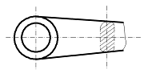
- 부분 단면도
- 직각 도시 단면도
- 회전 도시 단면도
- 가상 단면도
(정답률: 66%)
53. 1/2-20UNF 로 표시된 나사의 해독으로 올바른 것은?
- 유니파이 보통 나사이다.
- 등급은 1급이다.
- 호칭지름(수나사 바깥지름, 암나사 골지름)은 1/2 인치이다.
- 나사의 피치가 20㎜이다.
(정답률: 47%)
54. 그림과 같이 입체도의 화살표 방향이 정면일 때 우측면도로 가장 적합한 것은?
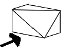
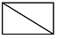
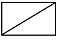
(정답률: 68%)
55. 그림과 같은 배관 도시기호에서 계기 표시가 압력계일 때 원 안에 사용하는 글자 기호는?
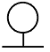
- A
- P
- T
- F
(정답률: 69%)
56. 그림과 같은 도면에서 KS 용접기호의 해독으로 틀린 것은?
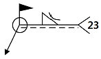
- 필릿 용접이다.
- 용접부 형상은 오목하다.
- 현장용접이다.
- 스폿용접(점용접)이다.
(정답률: 63%)
57. 그림과 같이 원통을 경사지게 절단한 제품을 제작할 때 다음 중 어떤 전개법이 가장 적합한가?
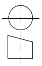
- 사각형법
- 평행선법
- 삼각형법
- 방사선법
(정답률: 67%)
58. 보기 입체도를 3각법으로 투상한 것으로 가장 가까운 것은?
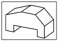
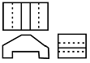
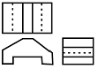
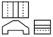
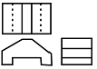
(정답률: 51%)
59. 선의 종류별 용도가 잘못 짝지어진 것은?
- 가는 실선 - 치수 보조선
- 굵은 1점 쇄선 - 특수 지정선
- 가는 1점 쇄선 - 피치선
- 가는 2점 쇄선 - 중심선
(정답률: 57%)
60. 기계제도에서 현의 길이 표시방법으로 가장 적합한 것은?
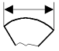
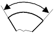
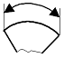
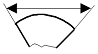
(정답률: 63%)